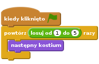
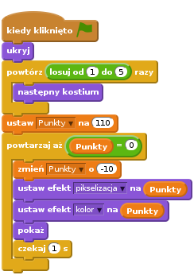
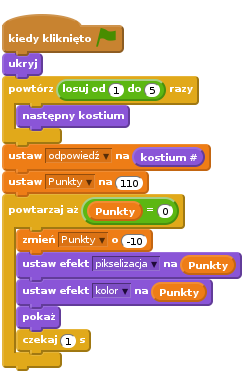
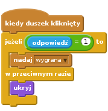
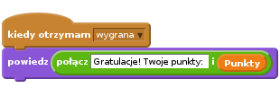
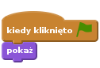

Wstęp
Na tablicy znajduje się zniekształcony obrazek. Musisz odgadnąć, co to jest, klikając na odpowiednią miniaturkę. Im szybciej zgadniesz, tym więcej punktów otrzymasz!

Krok 1: Wyświetl różne obrazki na tablicy
Chcemy pokazać na tablicy kilka różnych obrazków.
Zadania do wykonania
- Stwórz nowy projekt Scratch i usuń duszka kota.
- Kliknij na Scenę, a następnie na zakładkę Tła. Zaimportuj tło ‘W pomieszczeniu/chalkboard’.
- Zaimportuj nowego duszka i dodaj do niego kostium. Wybierz taki kostium, który Ci się podoba. Może znajdziesz coś ciekawego w katalogu ‘Przedmioty’.
- Umieść tego duszka na środku tablicy. Jeżeli trzeba, odpowiednio zwiększ lub zmniejsz jego rozmiar.
Kliknij na zakładkę Kostiumy i zaimportuj 4 dodatkowe kostiumy. Wybierz cokolwiek Ci się podoba!
Wyświetlmy teraz jakiś przypadkowy obrazek. Stwórz poniższy skrypt:

Przetestuj swój projekt
Kliknij zieloną flagę.
Czy duszek ma inny kostium?
Kliknij flagę jeszcze kilka razy
Czy duszek ma inny kostium za każdym razem? Czasem ten sam kostium może pojawić się 2 razy z rzędu. Ale nie przejmuj się, to nie jest problem. Prawdopodobnie zauważyliście, że duszek miga za każdym razem jak zmienia kostium. Zaraz naprawimy ten problem.
Zapisz swój projekt.
Krok 2: Zniekształcamy obrazki
Zniekształćmy teraz obrazek, kiedy pojawi się na tablicy po raz pierwszy, a w miarę upływu czasu niech staje się on coraz wyraźniejszy.
Użyjemy zmiennej z liczbą punktów, aby kontrolować jak bardzo obrazek jest zniekształcony. Jeżeli liczba punktów jest duża, obrazek będzie bardzo zniekształcony.
W miarę jak liczba punktów będzie się zmniejszać z czasem, obrazek będzie coraz wyraźniejszy. Liczba punktów będzie również działać jak zegar.
Zadania do wykonania
- Kliknij paletę Dane i stwórz zmienną o nazwie ‘Punkty’
Zmień skrypt, aby wyglądał tak jak ten poniżej:

Nie zapomnij dodać bloku ‘ukryj’ {.blockpurple} na początku skryptu, ustawić Punkty na 110 oraz wszystkiego poniżej.
Przetestuj swój projekt
Kliknij zieloną flagę.
- Czy na tablicy pojawia się przypadkowy, zniekształcony obrazek?
- Czy obrazek staje się coraz bardziej wyraźny w miarę upływu czasu?
- Czy liczba punktów zmniejsza się kiedy obrazek staje się coraz bardziej wyraźny?
- Czy zniekształcenie znika całkowicie, kiedy liczba punktów spadnie do 0?
- Czy na tablicy pojawia się inny obrazek po każdym wciśnięciu flagi?
Zapisz swój projekt.
Rzeczy do spróbowania
Spróbuj zmienić liczbę punktów na początku gry i wartość o jaką liczba punktów się zmniejsza w pętli. W jaki sposób wpływa to na wygląd obrazka? Czy teraz jest trudniej czy łatwiej odgadnąć co to jest?
Wypróbuj inne efekty graficzne z rozwijanej listy. W jaki sposób wpływają one na poziom trudności gry?
Krok 3: Pozwól graczowi zgadnąć co to za obrazek
Póki co, nasz przypadkowy obrazek powoli pojawia się na tablicy, a liczba punktów maleje w miarę upływu czasu. Ale jak mamy tę grę wygrać? Najpierw dodamy kilka dodatkowych duszków pod tablicą, które możesz kliknąć. Jeżeli klikniesz odpowiednią miniaturkę, wygrasz grę. Jeżeli klikniesz na zły obrazek, ten duszek zniknie i musisz spróbować zgadnąć jeszcze raz.
Najpierw musimy wiedzieć, która odpowiedź jest poprawna.
- Stwórz nową zmienną ‘dla każdego duszka’ i nazwij ją odpowiedź.
Zmień poprzedni skrypt i ustaw poprawną odpowiedź. Dodaj blok
ustaw [odpowiedź] na kostium #zaraz za pierwszą pętlą ‘powtórz’:
Teraz musimy dodać duszki, które gracz będzie mógł kliknąć.
- Skopiuj głównego duszka (użyj opcji duplikuj) i umieść go pod tablicą po lewej stronie.
- Zmień nazwę tego duszka na odpowiedź1. (Będzie nam prościej odwoływać się do konkretnych duszków w następnych krokach)
- Usuń skrypt z duszka odpowiedź1 oraz wszystkie jego kostiumy oprócz pierwszego.
- Powtórz trzy powyższe polecenia, tylko tym razem nazwij duszka odpowiedź2 i usuń wszystkie kostiumy oprócz drugiego.
- W podobny sposób stwórz duszki odpowiedź3, odpowiedź4 i odpowiedź5.
Powinniśmy teraz mieć pięć duszków w rzędzie pod tablicą, każdy z innym kostiumem, który może być wyświetlony na głównym duszku na tablicy. Upewnij się, że duszki ‘odpowiedzi’ nie posiadają żadnych skryptów.
Teraz zmienimy sposób, w jaki duszki będą reagować na kliknięcia myszką. Dalsze akcje będą zależeć od tego, czy odpowiedź jest poprawna.
Dodaj poniższy skrypt do duszka ‘odpowiedź1’:

- Przeciągnij ten skrypt na pozostałe duszki odpowiedzi. Dla każdego duszka, zmień 1 na 2, 3, itd.
Teraz musimy dodać coś, co będzie reagować na naszą wiadomość ‘wygrana’. Kliknij na głównego duszka, tego na tablicy i dodaj do niego ten dodatkowy skrypt:

Przetestuj swój projekt
Kliknij zieloną flagę.
- Podczas testowania gry warto włączyć podgląd na zmienną odpowiedź, aby widzieć poprawną odpowiedź. Na palecie Dane kliknij pole obok zmiennej odpowiedź, a pojawi się ona na scenie, w lewym górnym rogu.
- Co się dzieje po kliknięciu na poprawną odpowiedź?
- Co się dzieje po kliknięciu na niepoprawną odpowiedź?
- Co się dzieje z niepoprawną odpowiedzią po rozpoczęciu nowej gry?
Podczas testów zauważysz pewnie dwa problemy. Po pierwsze, duszki z niepoprawnymi odpowiedziami nie wracają na ekran po rozpoczęciu nowej gry. Po drugie, liczba punktów nie zatrzymuje się przy kliknięciu na poprawną odpowiedź.
Aby naprawić pierwszy problem, dodaj poniższy skrypt do wszystkich duszków odpowiedzi:

Aby naprawić drugi problem, trzeba zatrzymać pętlę ‘powtórz’ na duszku odpowiedzi po kliknięciu poprawnej odpowiedzi. Wymaga to nowej zmiennej. Ustaw ją na 0 po rozpoczęciu gry, a potem na 1 po wygraniu gry.
- Stwórz nową zmienną i nazwij ją ‘wygrano?’
Zmień istniejące skrypty, aby wyglądały tak jak poniżej:
![kiedy kliknięto zieloną FLAGĘ
ukryj
powtórz (losuj od (1) do (5)) razy
następny kostium
koniec
ustaw [odpowiedź v] na (kostium #)
ustaw [Punkty v] na (110)
ustaw [wygrano? v] na (0)
powtarzaj aż (((Punkty) = (0)) lub ((wygrano?) = (1))
zmień [Punkty v] o (-10)
ustaw efekt [pikselizacja v] na (Punkty)
ustaw efekt [kolor v] na (Punkty)
pokaż
czekaj (1) s
koniec
kiedy otrzymam [wygrana v]
ustaw [wygrano? v] na (1)
wyczyść efekty graficzne
powiedz (połącz [Gratulacje! Twoje punkty: ] i (Punkty))](af4fbd099233760a039755323a956d9e671d7840.png)
Zapisz swój projekt.
Brawo! Podstawowa wersja gry jest już gotowa!
Jest jeszcze kilka rzeczy, które można zmienić, aby ulepszyć grę. Spróbuj zrobić poniższe wyzwania!
Wyzwanie 1: Spraw, aby gra była trudniejsza albo łatwiejsza
Zmień poziom trudności gry.
- Zobacz, co się stanie, gdy zmienisz szybkość z jaką obrazek staje się wyraźniejszy lub z jaką zmniejsza się liczba punktów.
- Spróbuj zmienić rodzaj zniekształceń obrazka.
- Użyj innych obrazków. Sprawdź, czy gra jest trudniejsza czy łatwiejsza, gdy obrazki są podobne do siebie. A jak się gra, gdy obrazki znacząco się od siebie różnią? Nie zapomnij zmienić kostiumów na duszkach odpowiedzi.
Zapisz swój projekt.
Wyzwanie 2: Zniekształć obrazek w inny sposób w każdej grze
Teraz, za każdym razem, gdy zaczynasz grę, obrazki są zniekształcone w ten sam sposób. W drugim kroku próbowaliśmy kombinacji różnych zniekształceń, które działały równie dobrze jak zmiana koloru i pikselizacja.
Spróbuj użyć innych kombinacji zniekształceń, które działałyby równie dobrze.
Zmień grę w taki sposób, że za każdym razem obrazki zniekształcane są w inny sposób.
Podpowiedź: Stwórz nową zmienną i nazwij ją ‘zniekształcenie’. Przypisz jej przypadkową wartość zaraz na początku gry. Użyj bloku jeżeli w pętli ‘powtarzaj aż’, aby użyć odpowiedniego zniekształcenia.
Zapisz swój projekt.
Wyzwanie 3: Spraw, aby w grze było kilka rund
Obecnie każda gra jest niezależna. Zmień grę tak, aby można było zagrać w nią kilka razy. Na przykład, niech gracz w ciągu jednej gry ma 3 rundy - niech spróbuje odgadnąć 3 obrazki i zdobyć maksymalnie 300 punktów.
Podpowiedź: Będziesz potrzebować dodatkowej zmiennej, aby wiedzieć, ile rund ma mieć każda gra. Będziesz również potrzebować odpowiedniej pętli, aby gra odbywała się w rundach.
Podpowiedź: Pamiętaj, aby duszki, które zniknęły po złej odpowiedzi, pojawiły się z powrotem na ekranie na początku każdej rundy. Aby to zrobić, spróbuj nadać jakąś wiadomość.
Zapisz swój projekt.
Wyzwanie 4: Spraw, aby każda następna runda była trudniejsza
Spraw, aby gra była coraz trudniejsza z rundy na rundę.
Czy w każdej rundzie punkty powinny być przyznawane w ten sam sposób? Może gracz powinien zdobywać więcej punktów w póżniejszych rundach, jeżeli szybciej odgadnie obrazek?
Podpowiedź: Skąd będziemy wiedzieć, w której jesteśmy rundzie gry? W jaki sposób pomoże nam to zwiększyć trudność gry i przyznawać więcej punktów?
Zapisz swój projekt.
Wyzwanie 5: Graj tak długo, aż się pomylisz
Zamiast grać w określoną liczbę rund, spróbujmy zmienić grę tak, aby gracz mógł w nią grać dopóki się nie pomyli. Taki system gry będzie miał tylko sens, jeżeli gra będzie się robić coraz trudniejsza z każdą następną rundą.
Zapisz swój projekt.
Wyzwanie 6: Spraw, aby gra była trudniejsza albo łatwiejsza w zależności od tego jak dobrze gracz zgaduje
Spróbujmy dostosować trudność gry do umiejętności gracza, zamiast zwiększać trudność gry z każdą rundą. Jeżeli gracz odgadnie obrazek szybko, spraw, aby gra była trudniejsza w następnej rundzie. Ale jeżeli gracz się pomyli, albo potrzebuje więcej czasu, aby odgadnąć obrazek, niech następna runda będzie troszkę łatwiejsza.
Ten pomysł będzie miał sens tylko wtedy, kiedy nie będziemy sumować ilości punktów w ciągu całej gry.
Zapisz swój projekt.
Wyzwanie 7: Zapamiętaj najlepszy wynik
Zapamiętaj najlepszy wynik. Jeżeli ktoś będzie lepszy w kolejnej grze, zapytaj gracza o jego imię i zapisz nowy najlepszy wynik. Upewnij się, że najlepszy wynik i imię najlepszego gracza są wyświetlone na ekranie.
Zapisz swój projekt.
Wyzwanie 8: Za niepoprawną odpowiedź odejmij punkty
Póki co, gracz nie jest karany za niepoprawne odpowiedzi, więc teoretycznie może spróbować kliknąć na wszystkie odpowiedzi tak szybko jak się da, aż w końcu trafi na dobrą odpowiedź. Zmieńmy grę, aby za każdą niepoprawną odpowiedź gracz tracił punkty.
Jak myślisz, czy gra teraz jest lepsza?
Zapisz swój projekt.
Brawo! To by było na tyle, teraz możesz się cieszyć swoją grą!
Nie zapomnij, że możesz podzielić się swoją grą ze swoimi przyjaciółmi i rodziną. Żeby to zrobić, kliknij menu Udostępnij.